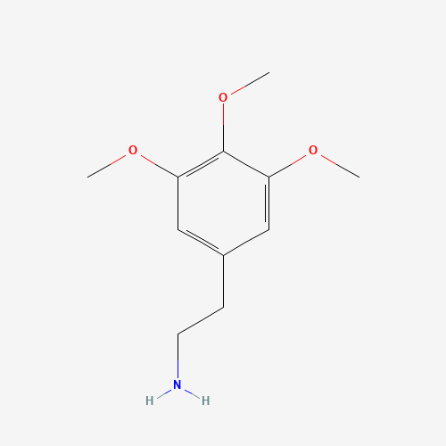

Mescaline
3,4,5-Trimethoxyphenethylamine
Dosage
Doses below are for oral pure mescaline (sulfate or hydrochloride) and are general reference ranges, not recommendations. Individual sensitivity varies widely, so start at the low end and never redose in the first few hours — mescaline's slow onset makes it easy to take too much.
| Level | Oral dose |
|---|---|
| Threshold | ~50 mg |
| Light | 50–200 mg |
| Common | 200–400 mg |
| Strong | 400–800 mg |
| Heavy | 800 mg+ |
Duration: onset 45–90 minutes, come-up 1–2 hours, peak 4–6 hours, offset 2–3 hours, with after-effects lasting 6–36 hours. Total duration is roughly 8–14 hours.
Cacti: potency varies enormously between plants, so cactus doses cannot be reliably converted from the chart above. Peyote contains roughly 0.4–6% mescaline; an average 76 mm (3 in.) button contains about 25 mg. San Pedro contains roughly 0.006–2.4%, Bolivian torch 0.025–2%, and Peruvian torch 0.0005–0.12%. Because of this range, a traditional dose of a given cactus can be far weaker or stronger than expected.
Source: PsychonautWiki (Mescaline).
Overview
Mescaline is a naturally occurring phenethylamine psychedelic found primarily in peyote (Lophophora williamsii), San Pedro cactus (Echinopsis pachanoi), and Peruvian torch cactus (Echinopsis peruviana). It acts as a serotonin 5-HT2A receptor agonist and produces a long-duration psychedelic experience — typically 10–12 hours — characterized by rich color enhancement, visual brilliance, deep emotional warmth, and a quality of introspection that many users describe as the clearest thinking of their lives. Historian Mike Jay, in "Mescaline: A Global History of the First Psychedelic," calls it "the substance that generated the modern concept of the psychedelic" — both in the sense that it was the first psychedelic to be scientifically studied, and in the sense that the very word was coined to describe its effects.
Ancient History
Mescaline's human history is among the oldest of any psychedelic. Archaeobotanical evidence from the Chavin culture of Peru dates San Pedro cactus use to approximately 1200 BCE — and possibly earlier. Stone carvings at the Chavin de Huántar temple complex depict the cactus alongside jaguar imagery and supernatural beings. Peyote use in Mexico is even older: dried peyote buttons found at a ritual burial site in the Rio Grande area have been dated to 3700 BCE. The Huichol people of the Sierra Madre Occidental conducted annual peyote pilgrimages to the sacred desert of Wirikuta, in which participants walked hundreds of miles to harvest the cactus in its native habitat — a practice still maintained today. Spanish missionaries in the 16th century documented and attempted to violently suppress peyote use, calling it a "diabolical fantasy" and treating it as a form of idolatry.

Western Discovery
German pharmacologist Arthur Heffter first isolated mescaline from peyote in 1897 — and confirmed its activity through self-experimentation. Ernst Späth achieved the first chemical synthesis in 1919. The compound entered the medical literature quickly: German psychiatrists administered it to patients throughout the early 1900s, studying its effects on perception and using it as a model for "model psychosis." American physicians in the 1910s–1920s published accounts of their own mescaline experiments. It was this early clinical body of work — including Louis Lewin's foundational 1924 monograph "Phantastica" — that established mescaline as the first systematically studied psychedelic substance in Western science, decades before LSD would exist.
Huxley & The Birth of a Word
In May 1953, Aldous Huxley took 400mg of mescaline sulfate at his Hollywood Hills home, under the supervision of psychiatrist Humphry Osmond. He documented the experience in "The Doors of Perception" (1954) — one of the most widely read accounts of a psychedelic experience ever written. Huxley described how ordinary objects — a vase of flowers, the folds of his trousers — became transfigured with a numinous significance that conventional language could barely contain. He proposed that the brain functions as a "reducing valve," normally filtering out the vast majority of available reality, and that mescaline opens that valve. The exchange between Huxley and Osmond also produced, through their correspondence, the word "psychedelic" itself — coined by Osmond in a 1956 letter: "To fathom hell or soar angelic / Just take a pinch of psychedelic." The term replaced earlier terms like "psychotomimetic" and "hallucinogen" — both of which Huxley and Osmond found inadequate to the actual nature of the experience.

The Native American Church
The Native American Church (NAC) was formally incorporated in Oklahoma in 1918, though its roots extend back decades earlier into the peyote ceremony traditions spread northward from Mexico by figures such as Quanah Parker. The NAC synthesized indigenous peyote ritual with Christian symbolism, creating an all-night ceremony centered on prayer, singing, and communal peyote use around a crescent-shaped altar and sacred fire. Today the NAC has an estimated 250,000–500,000 members across the United States and Canada, representing dozens of tribal nations. The American Indian Religious Freedom Act (1994) explicitly protects NAC members' right to use peyote in religious ceremonies — one of the few legal protections for psychedelic use under federal law in the United States.
Effects
Effects onset 1–2 hours after ingestion and last 10–12 hours, making mescaline one of the longest-acting classic psychedelics. The experience is characterized by rich, jewel-like color enhancement — colors appear more saturated and luminous than in ordinary reality. Visual hallucinations range from complex geometric patterns at lower doses to fully realized visions of landscapes, faces, and beings at higher doses. The emotional quality is often described as warmer and more empathetic than psilocybin or LSD — a sense of profound love for the world and the people in it. The cognitive clarity many users report distinguishes it: thinking is experienced as unusually lucid and meaningful, rather than confused or chaotic.
- Nausea / vomiting (come-up)
- Pupil dilation
- Elevated heart rate
- Physical warmth
- Tactile enhancement
- Sweating
- Muscle tension (come-up)
- Physical euphoria
- Intense colour enhancement
- Jewel-like visual brilliance
- Closed-eye geometry
- Open-eye geometry
- Tracers & after-images
- Depth perception distortion
- Environmental breathing / morphing
- Fully realized visions (high doses)
- Unusual cognitive clarity & lucidity
- Empathy & emotional warmth
- Introspection
- Creativity enhancement
- Nature connectedness
- Time distortion
- Ego dissolution (high doses)
- Philosophical ideation
- Auditory enhancement
- Music appreciation enhancement
- Auditory distortions
- Auditory hallucinations (high doses)
Research
A major 2021 survey study published in ACS Pharmacology & Translational Science (Agin-Liebes et al.) surveyed over 400 mescaline users and found that most respondents with depression, anxiety, PTSD, or alcohol and drug use problems reported improvement after their most memorable mescaline experience. The study found that ceremonial contexts and indigenous guidance were associated with more positive outcomes. A companion 2022 analysis in the Journal of Psychopharmacology (Uthaug et al.) found that very few respondents reported legal or psychological problems from use. Controlled human research has now begun: placebo-controlled studies in healthy volunteers in Basel (2023, 2024) mapped mescaline's dose-dependent effects and found that 500 mg feels comparable to LSD and psilocybin but lasts longer. Clinical trials in patients have not yet been published.
Key Papers
The 6 most relevant studies behind this page, each with a plain-English summary. Titles link to the paper; PubMed has the free abstract.
-
Clinical study
Psychological and cognitive effects of long-term peyote use among Native Americans
Harvard researchers compared 61 Navajo members of the Native American Church who regularly take peyote in ceremony with Navajo people who used few substances and with former drinkers. The peyote group showed no psychological or cognitive deficits, while the former drinkers did.
-
Survey
Naturalistic use of mescaline is associated with self-reported psychiatric improvements and enduring positive life changes
An online survey of 452 people who had used mescaline. Of those with depression, anxiety, PTSD, or alcohol or drug problems, 68–86% said they improved after their most memorable mescaline experience, especially when it brought psychological insight. Many rated it among the most meaningful experiences of their lives.
-
Survey
The epidemiology of mescaline use: pattern of use, motivations for consumption, and perceived consequences, benefits, and acute and enduring subjective effects
The companion analysis of the same 452 respondents. Most used peyote or San Pedro infrequently, for spiritual exploration or to connect with nature. Very few reported legal or psychological problems, none sought medical care, and challenging effects were rated as very slight.
-
Randomized trial
Comparative acute effects of mescaline, lysergic acid diethylamide, and psilocybin in a randomized, double-blind, placebo-controlled cross-over study in healthy participants
The first head-to-head comparison of the three classic psychedelics, in 32 healthy volunteers in Basel. At 500 mg, mescaline felt much like LSD and psilocybin, but it lasted longest (about 11 hours) and caused slightly more next-day side effects.
-
Randomized trial
Acute dose-dependent effects of mescaline in a double-blind placebo-controlled study in healthy subjects
Modern dose-response data for mescaline (100–800 mg) in 16 healthy volunteers. Effects scaled with dose and lasted from about 6 to 14 hours; nausea and vomiting were common at 800 mg. Blocking the 5-HT2A receptor with ketanserin blunted the experience, confirming that receptor drives it.
-
Review
An overview on the hallucinogenic peyote and its alkaloid mescaline: the importance of context, ceremony and culture
A readable review of peyote's chemistry, how mescaline works in the body, and early clinical research. It emphasizes how strongly set, setting and ceremony shape the outcome.
Legal Status
Mescaline is classified as a Schedule I controlled substance under US federal law. Peyote use is legally protected for members of the Native American Church under the American Indian Religious Freedom Act. Ann Arbor, Michigan has decriminalized natural psychedelics including mescaline. San Pedro and Peruvian torch cacti are legal to possess and cultivate in most US jurisdictions as ornamental plants — only the extraction of mescaline from them is prohibited. In several countries, including Chile and Peru, mescaline-containing cacti are not controlled substances.
Harm Reduction
Due to its long duration, plan for a full day with no obligations — and ideally a buffer day afterward for integration. Nausea and vomiting during the come-up are common, especially with raw peyote or San Pedro preparations — an empty stomach and slow hydration help. Do not combine with MAOIs, lithium, or stimulants. Ensure access to a safe, comfortable outdoor or indoor environment; mescaline's sensory enhancement makes natural settings particularly rewarding. Having a trusted, sober person available is strongly recommended. Cardiac stress is possible at high doses in individuals with pre-existing heart conditions — mescaline raises heart rate and blood pressure. Those with a personal or family history of psychosis should avoid it.
Further Reading
A curated library of essential texts on mescaline and the peyote tradition.
View the Mescaline Library →This page is for educational purposes only. Nothing here constitutes legal, medical, or therapeutic advice. Know your local laws.